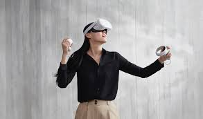
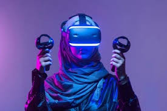
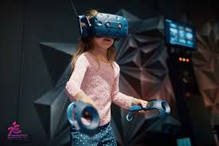
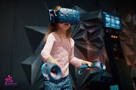

الفئات العمرية
1. الأطفال (أقل من 12 عامًا):
معظم الشركات المصنعة للنظارات الافتراضية (مثل Oculus وSony) تنصح بعدم استخدام الأطفال تحت سن 12 عامًا لهذه الأجهزة.
السبب في ذلك هو أن أعين الأطفال تكون في مرحلة النمو، وقد يتسبب الاستخدام المفرط أو غير الصحيح في إجهاد العين أو مشكلات أخرى
2 المراهقون (12-18 عامًا):
هذه الفئة العمرية يمكنها استخدام النظارات الافتراضية، ولكن ممراقبة الوالدين
• يجب تقليل وقت الاستخدام لتجنب إرهاق العين أو التعرض لمشكلات صحية مثل الدوار أو الغثيان.
هذه الفئة العمرية يمكنها استخدام النظارات الافتراضية، ولكن مع مراقبة الوالدين
3. البالغون (18 عامًا فما فوق):
البالغون هم الفئة الأساسية المستهدفة لهذه التكنولوجيا.
يمكنهم استخدام النظارات الافتراضية بحرية، بشرط أخذ فترات راحة منتظمة لتجنب الإجهاد الجسدي والعقلي
4. كبار السن:
يمكن لكبار السن استخدام النظارات الافتراضية إذا كانوا يتمتعون بصحة جيدة، ولكن يجب الحذر إذا كانوا يعانون من مشكلات صحية مثل الدوار أو مشكلات في النظر .


 
